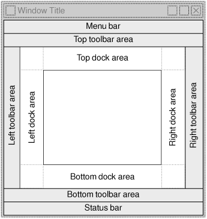
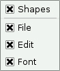

Dock windows are windows that can be docked inside a QMainWindow or floated as independent windows. QMainWindow provides four dock window areas: one above, one below, one to the left, and one to the right of the central widget. Applications such as Microsoft Visual Studio and Qt Linguist make extensive use of dock windows to provide a very flexible user interface. In Qt, dock windows are instances of QDockWidget. Figure 6.13 shows a Qt application with toolbars and a dock window.
Every dock window has its own title bar, even when it is docked. Users can move dock windows from one dock area to another by dragging the title bar. They can also detach a dock window from an area and let the dock window float as an independent window by dragging the dock window outside of any dock area. Free-floating dock windows are always "on top" of their main window. Users can close a QDockWidget by clicking the close button in the window's title bar. Any combination of these features can be disabled by calling QDockWidget::setFeatures().
In earlier versions of Qt, toolbars were treated like dock windows and shared the same dock areas. Starting with Qt 4, toolbars occupy their own areas around the central widget (as shown in Figure 6.14) and can't be undocked. If a floating toolbar is required, we can simply put it inside a QDockWidget.

The corners indicated with dotted lines can belong to either of their two adjoining dock areas. For example, we could make the top-left corner belong to the left dock area by calling QMainWindow::setCorner(Qt::TopLeftCorner, Qt::LeftDockWidgetArea).
The following code snippet shows how to wrap an existing widget (in this case, a QTreeWidget) in a QDockWidget and insert it into the right dock area:
QDockWidget *shapesDockWidget = new QDockWidget(tr("Shapes"));
shapesDockWidget->setObjectName("shapesDockWidget");
shapesDockWidget->setWidget(treeWidget);
shapesDockWidget->setAllowedAreas(Qt::LeftDockWidgetArea
| Qt::RightDockWidgetArea);
addDockWidget(Qt::RightDockWidgetArea, shapesDockWidget);The setAllowedAreas() call specifies constraints on which dock areas can accept the dock window. Here, we only allow the user to drag the dock window into the left and right dock areas, where there is enough vertical space for it to be displayed sensibly. If no allowed areas are explicitly set, the user can drag the dock window to any of the four areas.
Every QObject can be given an "object name". This name can be useful when debugging and is used by some test tools. Normally we do not bother to give widgets object names, but when we create dock windows and toolbars, doing so is necessary if we want to use QMainWindow::saveState() and QMainWindow::restoreState() to save and restore the dock window and toolbar geometries and states.
Here's how to create a toolbar containing a QComboBox, a QSpinBox, and a few QToolButtons from a QMainWindow subclass's constructor:
QToolBar *fontToolBar = new QToolBar(tr("Font"));
fontToolBar->setObjectName("fontToolBar");
fontToolBar->addWidget(familyComboBox);
fontToolBar->addWidget(sizeSpinBox);
fontToolBar->addAction(boldAction);
fontToolBar->addAction(italicAction);
fontToolBar->addAction(underlineAction);
fontToolBar->setAllowedAreas(Qt::TopToolBarArea
| Qt::BottomToolBarArea);
addToolBar(fontToolBar);If we want to save the position of all the dock windows and toolbars so that we can restore them the next time the application is run, we can write code that is similar to the code we used to save a QSplitter's state, using QMainWindow's saveState() and restoreState() functions:
void MainWindow::writeSettings()
{
QSettings settings("Software Inc.", "Icon Editor");
settings.beginGroup("mainWindow");
settings.setValue("geometry", saveGeometry());
settings.setValue("state", saveState());
settings.endGroup();
}
void MainWindow::readSettings()
{
QSettings settings("Software Inc.", "Icon Editor");
settings.beginGroup("mainWindow");
restoreGeometry(settings.value("geometry").toByteArray());
restoreState(settings.value("state").toByteArray());
settings.endGroup();
}Finally, QMainWindow provides a context menu that lists all the dock windows and toolbars. This menu is shown in Figure 6.15. The user can close and restore dock windows and hide and restore toolbars using this menu.
